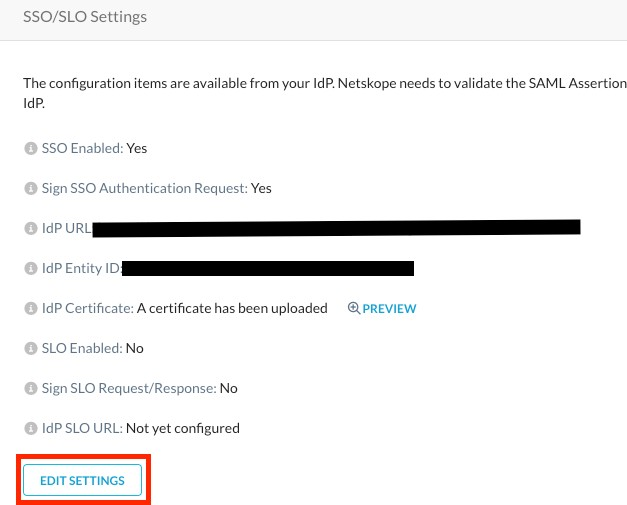
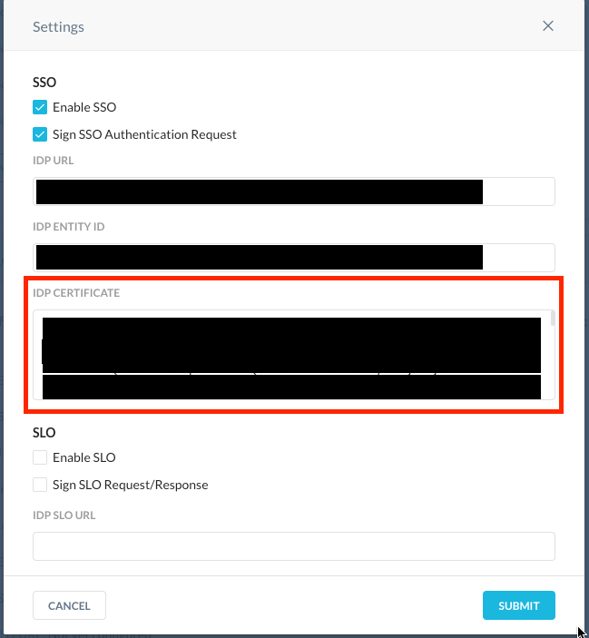

Configuring SSO settings in the Netskope tenant
Go back to the Netskope UI and select Edit Settings under SSO/SLO Settings:
 Copy the Login URL from the Azure Portal under the Set up <Your Application Name> section. The login URL should be similar to
https://login.microsoftonline.com/88ca94db-d34f-44ae-8bc7-de7b7fcd25ed/saml2
Paste the Login URL from the Azure Portal to the IdP URL field in the SSO Settings window in the Netskope UI:

Note
To set up forced authentication uncheck Enable SSO.
Copy the string from the Azure AD Identifier field under the Set up Netskope SSO section. It should be similar to
https://windows.net/88ca94db-d34f-44ae-8bc7-de7b7fcd25ed.
Paste the string from the Azure AD Identifier field from the Azure Portal to the IdP Entity ID field in the SSO Settings window in the Netskope UI:

Open the certificate file you downloaded in Step 18 in the Configuring an Enterprise Application in Microsoft Azure Active Directory using SAML from the Azure Portal in a text editor. Copy the entire certificate string including the Begin Certificate and End Certificate lines:

Paste the certificate string into the IDP Certificate field of the SSO Settings window of the Netskope UI:
 Click Submit.
Now you can add users to the application and assign roles. See Adding Azure Active Directory users to the defined application and assign roles.